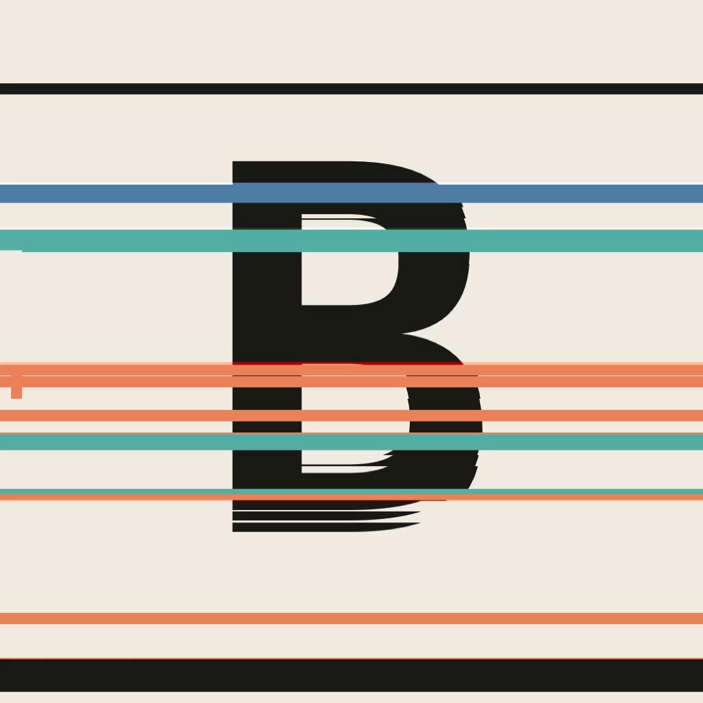

Beygla
A datamosh editor for macOS whose effects are driven by audio-in and MIDI-in triggers, so the glitches land on the beat instead of wherever you happened to drag them.
Load a clip. Beygla finds the transients in its audio — or in a separate track, or from a live input, or from a controller — and turns each hit into a trigger. Each trigger fires an effect rule that rewrites a span of compressed video frames.
A compressed stream has two kinds of frame. A keyframe is a whole picture. A delta frame carries only motion vectors and a small correction — instructions for moving the previous picture's pixels around. Every effect here works by lying about which pixels those instructions were meant for.
Colour groups them by what they do to the frame array: one hue for stripping reference frames, one for holding and repeating, one for reordering. Each is a rule with a length, an amount and four modulation parameters, and each has its own lane on the timeline — drag across a lane to set where that effect is live, so a set of effects takes turns over a clip instead of all of them firing on every hit.
Deletes the keyframes in range, so the incoming scene's motion lands on the outgoing scene's pixels.
Kills every frame carrying more data than a threshold — keyframes first, then the heavy refresh frames.
Holds one delta frame and re-applies it, so the picture slides steadily in one direction.
Loops the first few delta frames, so the image churns in a cycle rather than drifting.
Keeps one frame in every few and skips the rest: a hard judder that holds still between updates.
Every frame replaced with a skip frame. Motion stops dead and nothing smears.
Runs that double back: each one replays part of the one before, stacking partial movements.
The range's delta frames back to front, so shapes crawl backwards through themselves.
Each frame swapped with its neighbour — motion advances then corrects, one frame out of step.
Interleaves the range with itself reversed: two contradictory directions on alternate frames.
Each frame displaced in time by a gaussian amount. Motion stumbles rather than tears.
Reordered by frame size — by how violent each moment was. Gathers into a burst, or decays from one.
Skips forward through the range, then holds on the last frame reached.
Frames permuted individually, so the image tears into independently drifting blocks.
Shuffled in blocks, so motion stays coherent inside each one and only the joins are wrong.
Datamoshing means feeding a decoder frames it was never meant to see. The only practical way to do that is MPEG-4 Part 2 in an AVI container, because AVI stores each compressed frame as a plainly delimited chunk you can reorder with a hex editor.
The mosh is pure byte surgery. ffmpeg is only ever asked to do the two things it is unambiguously good at: produce a clean MPEG-4 elementary stream, and decode a deliberately broken one without giving up.
Every effect is length-preserving. An op only overwrites the frame slots it covers — it never inserts or deletes. The usual approach of duplicating frames to stretch a smear makes the video longer than its audio, which is fine for a one-off render and useless when the whole point is that the hits land on the kick.
Holding a frame is the interesting case. The obvious move — writing a zero-length AVI chunk — does not work: the decoder emits no picture for it and the output comes up short. On an eight-second test clip, holding thirty frames turned 240 frames into 210.
What Beygla writes instead is a synthesised six-byte
vop_coded = 0 P-VOP: a fully legal MPEG-4 frame meaning
"this picture is exactly the previous one". Building it requires reading
vop_time_increment_resolution out of the stream's VOL header,
which is not byte-aligned, so the parser walks it bit by bit.
That frame still produces no decoder output — but it leaves a correctly sized
hole in the presentation timeline, and decoding with
-fps_mode cfr refills the hole by repeating the last picture.
Frame count restored exactly, sync intact, and the intermediate AVI stays
playable in other tools.
Download the release, unzip, and move Beygla.app to
Applications. Nothing else to install — ffmpeg ships inside
the app.
The app is ad-hoc signed and not notarized, so Gatekeeper will refuse it on first launch — right-click and choose Open, or clear the quarantine flag:
xattr -dr com.apple.quarantine /Applications/Beygla.app
That is the honest state of it: a locally built app, not a distributed product. Building from source avoids the issue entirely.
git clone https://github.com/SungamMagnus/beygla.git cd beygla ./tools/build-ffmpeg.sh ./build.sh --universal
The bundled ffmpeg is built from source rather than copied. Homebrew's is
dynamically linked against its own Cellar, built for one architecture, and
links libx264 — which makes it GPL. Beygla's is static, universal, and
built --disable-gpl, taking H.264 from VideoToolbox instead,
so it is LGPL. Everything the app never asks for is switched off.
The same build produces beyglactl, a command-line front end that
shares every line of the actual moshing with the app.
beyglactl render clip.mp4 out.mp4 --band low --effect bloom --dur 0.4